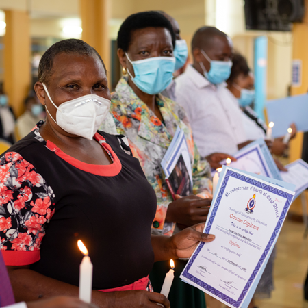

Theological Education by Extension (TEE)
TEE, as an alternative leadership training system, brings theological, biblical and practical leadership
training to people right where they live and worship.
Connect with us >
In Sukari Parish, we run Theological Education by Extension (TEE) programs such as TEE Diploma, TEE
Higher Diploma, Holistic Nurturing of Children and Diploma in Guidance and Counselling. Programs are
offered by Extension by Presbyterian University of East Africa and are disseminated at the local church
level with an intention of training interested members more about the bible and other relevant
contemporary issues.
